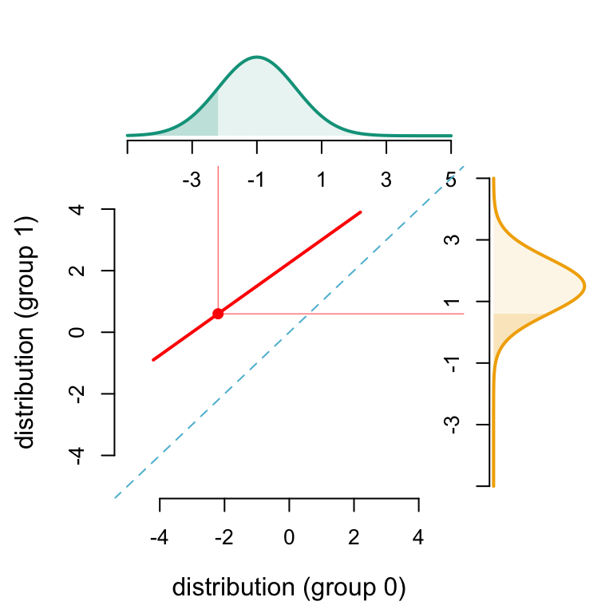
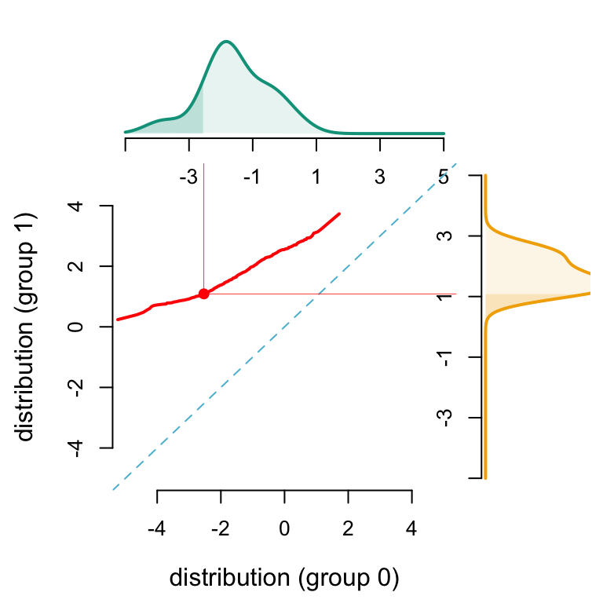
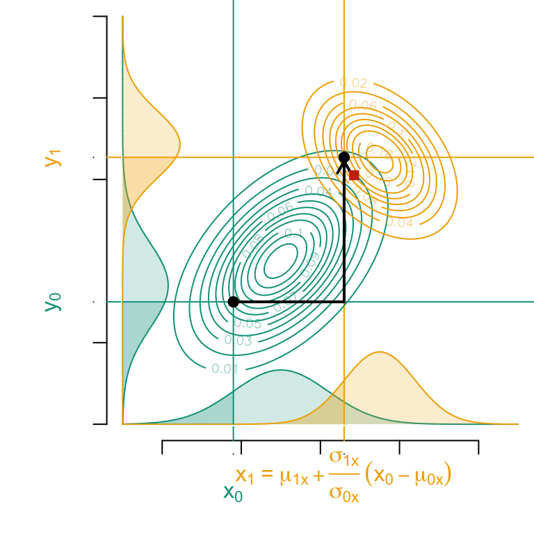
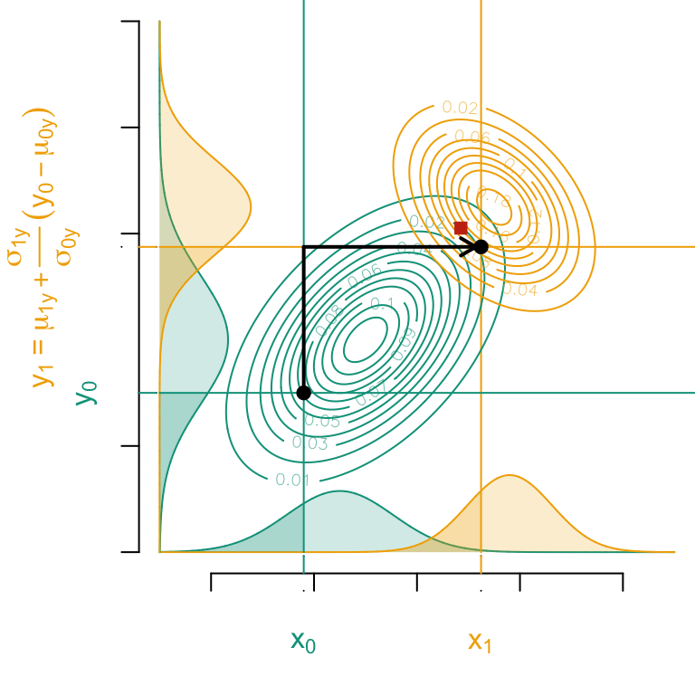
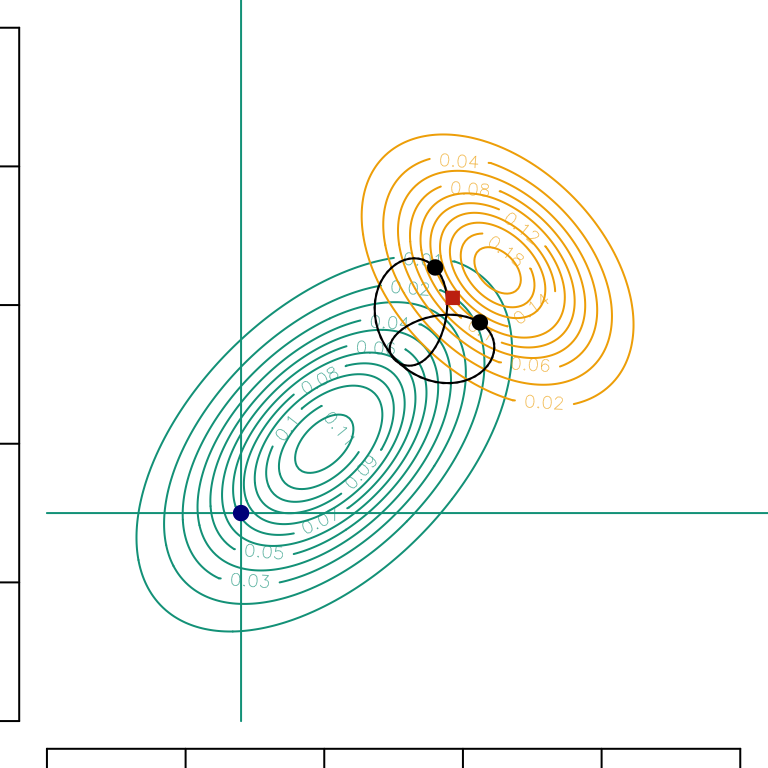
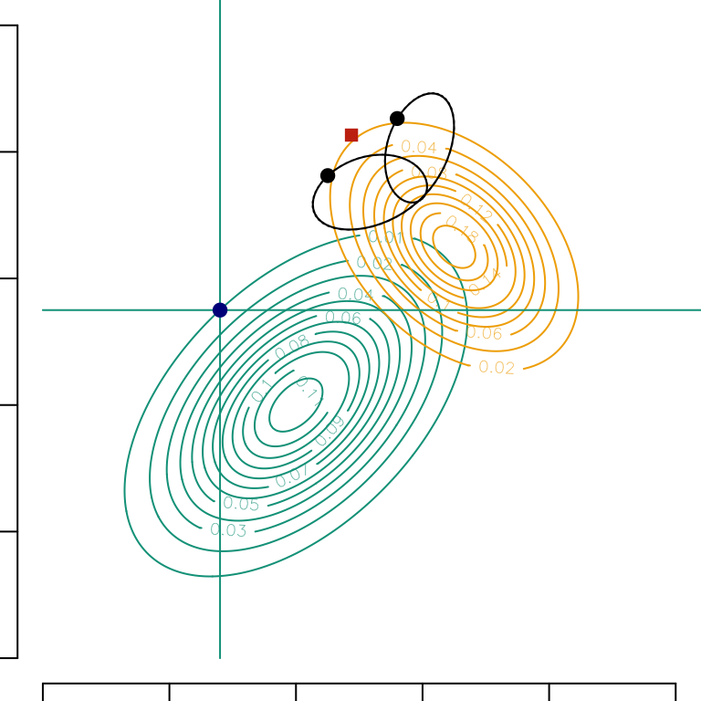

This chapter demonstrates Optimal Transport (OT) methodology applied to simulated Gaussian and general marginal distributions. The sensitive attribute \(S \in \left\{0,1\right\}\) is a binary variable, with each group \(S=0\) and \(S=1\), corresponding to a distinct Gaussian or general distribution. The objective is to transport, with OT theory, \(\boldsymbol{X} = (X_1,X_2)\) from group \(S=0\) to group \(S=1\).
Display the setting codes
# Required packages----library(tidyverse)library(glue)library(igraph)library("wesanderson")library(scales)library(kableExtra)library(expm)library(ks)# Graphs----colors <-c(`0`="#5BBCD6", `1`="#FF0000", A ="#00A08A", B ="#F2AD00", with ="#046C9A", without ="#C93312", `2`="#0B775E")# Seedset.seed(1234)source("../functions/utils.R")source("../functions/graphs.R")
\(\newcommand{\indep}{\perp \!\!\! \perp}\)
1.1 Univariate Optimal Transport
1.1.1 Gaussian distribution
The Gaussian case is the most simple one since mapping \({T}^\star\), corresponding to OT, can be expressed analytically (it will be a linear mapping). Furthermore, conditional distributions of a multivariate Gaussian distribution are Gaussian distributions, and that can be used to consider an iteration of simple conditional (univariate) transports, as a substitute to joint transport \({T}^\star\). Here \(\Phi\) denotes the univariate cumulative distribution function of the standard Gaussian distribution \(\mathcal{N}(0,1)\).
One can easily prove that the optimal mapping, from a \(\mathcal{N}(\mu_0,\sigma_0^2)\) to a \(\mathcal{N}(\mu_1,\sigma_1^2)\) distribution is: \[
x_{1}={T}^\star(x_{0})= \mu_{1}+\frac{\sigma_{1}}{\sigma_{0}}(x_{0}-\mu_{0}),
\] which is a nondecreasing linear transformation.
Let us illustrate this. We start by simulating two Univariate Gaussian distributions with their densities: one for the subset \(S=0\) and one for the subset \(S=1\).
# Univariate Gaussian distribution S=0x1_grid <-seq(-5, 5, length =251)m0 <--1s0 <-1.2d0x1 <-dnorm(x1_grid, m0, s0)d_0 <-data.frame(x = x1_grid, y = d0x1)# Univariate Gaussian distribution S=1m1 <-1.5s1 <- .9d1x1 <-dnorm(x1_grid, m1, s1)d_1 <-data.frame(x = x1_grid, y = d1x1)
In the following graphs, we plot the optimal transport mapping for one example individual from subset \(S=0\):
u <-0.1586553# u-quantile of X1 for subset S=0x1 <-qnorm(u, m0, s0)# u-quantile of X1 for subset S=1x1_star <-qnorm(u, m1, s1)
We also calculate the indices of \(X_1\) grid that are below this individual (\(x_1\)) and its counterfactual (\(x_1^*\)) in order to plot the cdf’s (for this individual) of \(X_1\) in both subsets \(S=0\) and \(S=1\) in the following graphs:
We then plot the Optimal Transport line between \(X_1|S=0\) and \(X_1|S=1\):
Display the codes used to create the Figure
# Graph parameterslimA <-c(-5, 5)limB <-c(-5, 5) limY <-c(0, .5)lab <-c("A", "B")sub <-6{ mat <-matrix(c(1, 2, 0, 3), 2)par(mfrow =c(2, 2))layout(mat, c(3.5, 1), c(1, 3))par(mar =c(0.5, 4.5, 0.5, 0.5))}# Density of X1 in subset S=0plot( d_0$x, d_0$y, type ="l", col = colors[lab[1]], lwd =2,axes =FALSE, xlab ="", ylab ="", xlim = limA, ylim = limY)polygon(c(0, d_0$x, 1), c(0, d_0$y, 0), col = scales::alpha(colors[lab[1]], 0.1), border =NA)# cdf of X1 in subset S=0polygon(c(min(d_0$x), d_0$x[idx1], max(d_0$x[idx1])),c(0, d_0$y[idx1], 0),col = scales::alpha(colors["A"],.2),border =NA)# Add x-axisaxis(1, at =seq(limA[1], limA[2], length = sub), label =c(NA, seq(limA[1], limA[2], length = sub)[-1]))# Optimal transport from subset S=0 to S=1 (defined with quantile functions)par(mar =c(4.5, 4.5, 0.5, 0.5))u_grid <-seq(0, 1, length=261)q_0 <-qnorm(u_grid, m0, s0)q_1 <-qnorm(u_grid, m1, s1)plot( q_0, q_1, col = colors["1"], lwd =2, type ="l", xlab ="", ylab ="", xlim = limA, ylim = limB, axes =FALSE)abline(a =0, b =1, col = colors["0"], lty =2)# Add x-axis and y-axisaxis(1)axis(2)# Legendmtext("distribution (group 0)", side =1, line =3, col ="black")mtext("distribution (group 1)", side =2, line =3, col ="black")# Example individualpoints(x1, x1_star, pch =19, col = colors["1"])segments(x1, x1_star, x1, 10, lwd = .4, col = colors["1"])segments(x1, x1_star, 10, x1_star, lwd = .4, col = colors["1"])# Density of X1 in subset S=1par(mar =c(4.5, 0.5, 0.5, 0.5))plot( d_1$y, d_1$x, type ="l", col = colors[lab[2]], lwd =2,ylim = limB, xlim = limY, xlab ="", ylab ="", axes =FALSE)polygon(c(0, d_1$y, 0), c(0, d_1$x, 1), col = scales::alpha(colors[lab[2]], 0.1), border =NA)# cdf of X1 in subset S=1polygon(c(0, d_1$y[idx1_star], 0),c(min(d_1$x), d_1$x[idx1_star], max(d_1$x[idx1_star])),col = scales::alpha(colors["B"],.2),border =NA)# Add y-axisaxis(2, at =seq(limB[1], limB[2], length = sub), label =c(NA, seq(limB[1], limB[2], length = sub)[-c(1, sub)], NA))
Univariate optimal transport, with Gaussian distributions

1.1.2 General distribution
We simulate two general univariate distributions based on Gaussian distributions with their densities, cdf’s and quantile functions: one for the subset \(S=0\) and one for the subset \(S=1\).
# General distribution for subset S=0x0 <-rnorm(13, m0, s0)f0 <-density(x0, from =-5, to =5, n =length(x1_grid))d0 <- f0$yd_0 <-data.frame(x = x1_grid, y = d0)x0s <-sample(x0, size =1e3, replace =TRUE) +rnorm(1e3, 0, f0$bw)F0 <-Vectorize(function(x) mean(x0s <= x))Q0 <-Vectorize(function(x) as.numeric(quantile(x0s, x)))# General distribution for subset S=1x1 <-rnorm(7, m1, 1)f1 <-density(x1, from =-5, to =5, n =length(x1_grid))d1 <- f1$yd_1 <-data.frame(x = x1_grid, y = d1)x1s <-sample(x1, size =1e3, replace =TRUE) +rnorm(1e3, 0, f1$bw)F1 <-Vectorize(function(x) mean(x1s <= x))Q1 <-Vectorize(function(x) as.numeric(quantile(x1s, x)))
In the following graphs, we plot the optimal transport mapping for one example individual from subset \(S=0\):
u <-0.1586553x1 <-Q0(u)x1_star <-Q1(u)
We also calculate the indices of \(X_1\) grid that are below this individual (\(x_1\)) and its counterfactual (\(x_1^*\)) in order to plot the cdf’s (for this individual) of \(X_1\) in both subsets \(S=0\) and \(S=1\) in the following graphs:
We then plot the Optimal Transport line between \(X_1|S=0\) and \(X_1|S=1\):
Display the codes used to create the Figure
{ mat <-matrix(c(1, 2, 0, 3), 2)par(mfrow =c(2, 2))layout(mat, c(3.5, 1), c(1, 3))par(mar =c(0.5, 4.5, 0.5, 0.5))}# Density of X1 in subset S=0plot(d_0$x, d_0$y, type ="l", col = colors[lab[1]], lwd =2,axes =FALSE, xlab ="", ylab ="", xlim = limA, ylim = limY)polygon(c(0, d_0$x, 1), c(0, d_0$y, 0), col = scales::alpha(colors[lab[1]], 0.1), border =NA)# cdf of X1 in subset S=0polygon(c(min(d_0$x), d_0$x[idx1], max(d_0$x[idx1])),c(0, d_0$y[idx1], 0),col = scales::alpha(colors["A"],.2),border =NA)# Add x-axisaxis(1, at =seq(limA[1], limA[2], length = sub), label =c(NA, seq(limA[1], limA[2], length = sub)[-1]))# Optimal transport from subset S=0 to S=1 (defined with quantile functions)par(mar =c(4.5, 4.5, 0.5, 0.5))u_grid <-seq(0, 1, length=261)q_0 <-Q0(u_grid)q_1 <-Q1(u_grid)plot( q_0, q_1, col = colors["1"], lwd =2, type ="l", xlab ="", ylab ="", xlim = limA, ylim = limB, axes =FALSE)abline(a =0, b =1, col = colors["0"], lty =2)# Add x-axis and y-axisaxis(1)axis(2)# Legendmtext("distribution (group 0)", side =1, line =3, col ="black")mtext("distribution (group 1)", side =2, line =3, col ="black")# Example individualpoints(x1, x1_star, pch =19, col = colors["1"])segments(x1, x1_star, x1, 10, lwd = .4, col = colors["1"])segments(x1, x1_star, 10, x1_star, lwd = .4, col = colors["1"])# Density of X1 in subset S=1par(mar =c(4.5, 0.5, 0.5, 0.5))plot( d_1$y, d_1$x, type ="l", col = colors[lab[2]], lwd =2,ylim = limB, xlim = limY, xlab ="", ylab ="", axes =FALSE)polygon(c(0, d_1$y, 0), c(0, d_1$x, 1), col = scales::alpha(colors[lab[2]], 0.1), border =NA)# cdf of X1 in subset S=1polygon(c(0, d_1$y[idx1_star], 0),c(min(d_1$x), d_1$x[idx1_star], max(d_1$x[idx1_star])),col = scales::alpha(colors["B"],.2),border =NA)# Add y-axisaxis(2, at =seq(limB[1], limB[2], length = sub), label =c(NA, seq(limB[1], limB[2], length = sub)[-c(1, sub)], NA))
General marginal distribution

1.2 Multivariate Optimal Gaussian Transport
Recall that \(\boldsymbol{X}\sim\mathcal{N}(\boldsymbol{\mu},\boldsymbol{\Sigma})\) if its density, with respect to Lebesgue measure is \[
\begin{equation}
{\displaystyle f(\boldsymbol{x})\propto{{\exp \left(-{\frac {1}{2}}\left({\boldsymbol{x} }-{\boldsymbol {\mu }}\right)^{\top}{\boldsymbol {\Sigma }}^{-1}\left({\boldsymbol {x} }-{\boldsymbol {\mu }}\right)\right)}.%{\sqrt {(2\pi )^{k}|{\boldsymbol {\Sigma }}|}}}}
}
}
\end{equation}
\tag{1.1}\]
If \(\boldsymbol{X}_0\sim\mathcal{N}(\boldsymbol{\mu}_0,\boldsymbol{\Sigma}_0)\) and \(\boldsymbol{X}_1\sim\mathcal{N}(\boldsymbol{\mu}_1,\boldsymbol{\Sigma}_1)\), the optimal mapping is also linear, \[
\boldsymbol{x}_{1} = T^\star(\boldsymbol{x}_{0})=\boldsymbol{\mu}_{1} + \boldsymbol{A}(\boldsymbol{x}_{0}-\boldsymbol{\mu}_{0}),
\] where \(\boldsymbol{A}\) is a symmetric positive matrix that satisfies \(\boldsymbol{A}\boldsymbol{\Sigma}_{0}\boldsymbol{A}=\boldsymbol{\Sigma}_{1}\), which has a unique solution given by \(\boldsymbol{A}=\boldsymbol{\Sigma}_{0}^{-1/2}\big(\boldsymbol{\Sigma}_{0}^{1/2}\boldsymbol{\Sigma}_{1}\boldsymbol{\Sigma}_{0}^{1/2}\big)^{1/2}\boldsymbol{\Sigma}_{0}^{-1/2}\), where \(\boldsymbol{M}^{1/2}\) is the square root of the square (symmetric) positive matrix \(\boldsymbol{M}\) based on the Schur decomposition (\(\boldsymbol{M}^{1/2}\) is a positive symmetric matrix), as described in Higham (2008). If \(\boldsymbol{\Sigma}=\displaystyle\begin{pmatrix}1&r\\r&1\end{pmatrix}\), and if \(a=\sqrt{(1-\sqrt{1-r^2})/2}\), then: \[
\boldsymbol{\Sigma}^{1/2}=\displaystyle\begin{pmatrix}\sqrt{1-a^2}&a\\a&\sqrt{1-a^2}\end{pmatrix}.
\]
Observe further this mapping is the gradient of the convex function \[
\psi(\boldsymbol{x})=\frac{1}{2}(\boldsymbol{x}-\boldsymbol{\mu}_0)^\top\boldsymbol{A}(\boldsymbol{x}-\boldsymbol{\mu}_0)+\boldsymbol{x}-\boldsymbol{\mu}_1^\top\boldsymbol{x}
\] and \(\nabla T^\star = \boldsymbol{A}\) (see Takatsu (2011) for more properties of Gaussian transport). And if \(\boldsymbol{\mu}_0=\boldsymbol{\mu}_1=\boldsymbol{0}\), and if \(\boldsymbol{\Sigma}_{0}=\mathbb{I}\) and \(\boldsymbol{\Sigma}_{1}=\boldsymbol{\Sigma}\), \(\boldsymbol{x}_{1} = T^\star(\boldsymbol{x}_{0})=\boldsymbol{\Sigma}^{1/2}\boldsymbol{x}_{0}\). Hence, \(\boldsymbol{\Sigma}^{1/2}\) is a linear operator that maps from \(\boldsymbol{X}_0\sim\mathcal{N}(\boldsymbol{0},\mathbb{I})\) (the reference density) to \(\boldsymbol{X}_1\sim\mathcal{N}(\boldsymbol{0},\boldsymbol{\Sigma})\) (the target density).
1.3 Conditional Gaussian Transport
Alternatively, since \(\boldsymbol{\Sigma}\) is a positive definite matrix, from the Cholesky decomposition, it can be written as the product of a lower (or upper) triangular matrix and its conjugate transpose, \[
\boldsymbol{\Sigma}=\boldsymbol{L}\boldsymbol{L}^\top=\boldsymbol{U}^\top\boldsymbol{U}.
\]
1.3.1 Remark
If \(\boldsymbol{\Sigma}=\displaystyle\begin{pmatrix}1&r\\r&1\end{pmatrix}\), then \(\boldsymbol{L}=\boldsymbol{\Sigma}_{2|1}^{1/2}=\displaystyle\begin{pmatrix}1&0\\r&\sqrt{1-r^2}\end{pmatrix}\) while \(\boldsymbol{U}=\boldsymbol{\Sigma}_{1|2}^{1/2}=\boldsymbol{\Sigma}_{2|1}^{1/2\top}=\boldsymbol{L}^\top\). Then \(\boldsymbol{L}^\top\boldsymbol{L}=\boldsymbol{\Sigma}=\boldsymbol{U}^\top\boldsymbol{U}\).
Both \(\boldsymbol{L}\) and \(\boldsymbol{U}\) are linear operators that map from \(\boldsymbol{X}_0\sim\mathcal{N}(\boldsymbol{0},\mathbb{I})\) (the reference density) to \(\boldsymbol{X}_1\sim\mathcal{N}(\boldsymbol{0},\boldsymbol{\Sigma})\) (the target density). \(\boldsymbol{x}_0\mapsto\boldsymbol{L}\boldsymbol{x}_0\) and \(\boldsymbol{x}_0\mapsto\boldsymbol{U}\boldsymbol{x}_0\) are respectively linear lower and upper triangular transport maps.
where \(T_x(x_0)\) and \(T_{y|x}(y_0)\) are respectively \[
\begin{cases}
\mu_{1x} +\displaystyle\frac{\sigma_{1x}}{\sigma_{0x}}(x_0-\mu_{0x})\phantom{\displaystyle\int}\\
\mu_{1y}+\displaystyle\frac{r_1\sigma_{1y}}{\sigma_{1x}}(T_x(x_0)-\mu_{1x})+\sqrt{\displaystyle\frac{\sigma_{0x}^2(\sigma_{1y}^2{\sigma_{1x}^2}-{r_1^2\sigma_{1y}^2})}{(\sigma_{0y}^2{\sigma_{0x}^2}-{r_0^2\sigma_{0y}^2})\sigma_{1x}^2}}(y_0\!-\!\mu_{0y}\!-\!\displaystyle\frac{r_0\sigma_{0y}}{\sigma_{0x}}(x_0\!-\!\mu_{0x}))
\end{cases}
\]
that are both linear mappings. Let us visualize this.
Code
par(mar =c(2.5, 2.5, 0, 0))par(mfrow =c(1, 1))# Assumed cdf for the individual of interestp1 <-0.1586553# y coordinate for that individualb1 <-3vx <-seq(-5, 5, length =6001)vy1 <-dnorm(vx,-1, 1.2)*4vy2 <-dnorm(vx, 1.5, .9)*4# Marginal density of x0 in source group (at the bottom of graph)plot( vx, vy1, col = colors["A"], xlab ="", ylab ="", axes =FALSE, type ="l", ylim =c(0, 10))polygon(c(min(vx), vx, max(vx)),c(0, vy1, 0),col = scales::alpha(colors["A"], .2),border =NA)# Marginal density of x1 in target group (at the bottom of graph)lines(vx, vy2, col = colors["B"])polygon(c(min(vx), vx, max(vx)),c(0, vy2, 0),col = scales::alpha(colors["B"], .2),border =NA)# Corresponding quantile in the marginal distributiona1 <-qnorm(p1, -1, 1.2) # in source group# Transported value along xa2 <-qnorm(p1, 1.5, .9) # in target group# Identify observation in x below this quantile a1idx1 <-which(vx <= a1)# Identify observation in x below this quantile a2idx2 <-which(vx <= a2)# Showing P(X_1 < a1 | S = 0) on the marginal density plotspolygon(c(min(vx), vx[idx1], max(vx[idx1])),c(0, vy1[idx1],0),col = scales::alpha(colors["A"],.2),border =NA)# vertical line to show quantile a1segments(a1, 0, a1, 100, col = colors["A"])# Showing P(X_1 < a2 | S = 1) on the marginal density plotspolygon(c(min(vx), vx[idx2], max(vx[idx2])),c(0, vy2[idx2], 0),col=scales::alpha(colors["B"], .2),border =NA)# vertical line to show quantile a2segments(a2, 0, a2, 100, col = colors["B"])# Mean and variance matrix in both groupsM1 <-c(-1,-1+5)M2 <-c(1.5,1.5+5)S1 <-matrix(c(1,.5,.5,1)*1.2^2,2,2)S2 <-matrix(c(1,-.4,-.4,1)*.9^2,2,2)A <-sqrtm(S1) %*% S2 %*% (sqrtm(S1))A <-solve(sqrtm(S1)) %*%sqrtm(A) %*%solve((sqrtm(S1)))T <-function(x) as.vector(M2 + A %*% (x - M1))# Bivariate Gaussian densitylibrary(mvtnorm)vx0 <-seq(-5, 5, length =251)data.grid <-expand.grid(x = vx0, y = vx0 +5)dgauss1 <-matrix( mvtnorm::dmvnorm(data.grid, mean = M1, sigma = S1), length(vx0), length(vx0))dgauss2 <-matrix( mvtnorm::dmvnorm(data.grid, mean = M2, sigma = S2), length(vx0), length(vx0))# Contour of the bivariate Gaussian density in source groupcontour(vx0, vx0 +5, dgauss1, col = colors["A"], add =TRUE)# Contour of the bivariate Gaussian density in target groupcontour(vx0, vx0 +5, dgauss2, col = colors["B"], add =TRUE)axis(1, at =seq(-2, 2) *2, labels =NA)axis(1, at = a1,labels =expression(x[0]),col.ticks =NA,col.axis = colors["A"], line = .5)axis(1, at = a2,labels =bquote( x[1]~"="~mu[1][x] +frac(sigma[1][x],sigma[0][x])~(x[0]-mu[0][x]) ),col.ticks =NA,col.axis = colors["B"], line = .5)axis(1, at = a1,labels =NA,col.ticks = colors["A"], line =-.5)axis(1, at = a2,labels =NA,col.ticks = colors["B"], line =-.5)#### Second axis###y <- b1vx <- vx +5mu1 <- M1[2] + S1[1, 2] / S1[1, 1] * (a1 - M1[1])sig1 <-sqrt(S1[2, 2] - S1[2, 1]^2/ S1[2, 2])mu2 <- M2[2] + S2[1, 2] / S2[1, 1] * (a2 - M2[1])sig2 <-sqrt(S2[2, 2]- S2[2, 1]^2/ S2[2, 2])vz1 <-dnorm(vx, mu1, sig1) *3vz2 <-dnorm(vx, mu2, sig2) *3# Marginal density on y, source grouplines(vz1 -5, vx, col = colors["A"])polygon(c(0, vz1, 0) -5,c(min(vx), vx, max(vx)),col = scales::alpha(colors["A"], .2),border =NA)# target grouplines(vz2 -5, vx, col = colors["B"])polygon(c(0, vz2, 0) -5,c(min(vx), vx, max(vx)),col = scales::alpha(colors["B"], .2),border =NA)# Identify the cdf at b1 in the marginal distributionp1 <-pnorm(b1, mu1, sig1)# Transported value in the target marginal distributionb2 <-qnorm(p1, mu2, sig2)# Identify observation in y below this quantile b1idx1 <-which(vx <= b1)# Identify observation in y below this quantile b2idx2 <-which(vx <= b2)# Showing P(X_2 < b1 | S = 0) on the marginal density plotspolygon(c(0, vz1[idx1], 0) -5,c(min(vx), vx[idx1], max(vx[idx1])),col = scales::alpha(colors["A"], .2),border =NA)# Showing P(X_2 < b2 | S = 1) on the marginal density plotspolygon(c(0, vz2[idx2], 0) -5,c(min(vx), vx[idx2], max(vx[idx2])),col = scales::alpha(colors["B"], .2),border =NA)# horizontal line to show quantile b1segments(-5, b1, 100, b1, col = colors["A"])# horizontal line to show quantile b2segments(-5, b2, 100, b2, col = colors["B"])# Draw the individual of interest points(a1, b1, pch =19)axis(2, at =c(0,1,3,4,5) *2, labels =NA)axis(2, at = b1,labels =expression(y[0]),col.ticks =NA,col.axis = colors["A"], line = .5)axis(2, at = b2,labels =bquote(y[1]),col.ticks =NA,col.axis = colors["B"], line = .5)axis(2,at = b1,labels =NA,col.ticks = colors["A"], line =-.5)axis(2,at = b2,labels =NA,col.ticks = colors["B"], line =-.5)# Drawing transported pointpoints(a2, b2, pch =19)# Decomposition of the sequential transport# First transport along the x axissegments(a1, b1, a2, b1, lwd =2)# Then transport along the y axisarrows(a2, b1, a2, b2 - .1, length = .1, lwd =2)# Storing in a matrix the coordinates of the point before and after transportX_then_Y <-matrix(c(a1, b1, a2, b2), 2, 2)colnames(X_then_Y) =c("start","x_then_y")# Showing the transported point if we assume another sequential transport:# first along the y axis, and then along the x axisM1 <-c(-1, -1+5)M2 <-c(1.5, 1.5)S1 <-matrix(c(1, .5, .5, 1) *1.2^2, 2, 2)S2 <-matrix(c(1, -.4, -.4, 1) * .9^2, 2, 2)# TransportAA <-sqrtm(S1) %*% S2 %*% (sqrtm(S1))AA <-solve(sqrtm(S1)) %*%sqrtm(AA) %*%solve((sqrtm(S1)))T <-function(x) as.vector(M2 + AA %*% (x - M1))opt_transp <-T(c(a1, b1))XYopt <-matrix(c(a1, b1, opt_transp[1], opt_transp[2] +5), 2, 2)colnames(XYopt) =c("start","OT")# Drawing the point transported with the different order in the sequencepoints(opt_transp[1], opt_transp[2] +5, pch =15, col ="#C93312")
Gaussian conditional optimal transport. The process begins with a univariate transport along the \(x\) axis (using \(T_x^*\)), followed by a transport along the \(y\) axis on the conditional distribution (using \(T_{y|x}^*\)), corresponding to the “lower triangular affine mapping.” The red square is the multivariate optimal transport of the point considering an “upper triangular affine mapping” instead.

Now, let us transport first along the \(y\) axis, and then along the \(x\) axis.
Code
par(mar =c(2.5, 2.5, 0, 0))par(mfrow =c(1, 1))# Mean and variance matrix in both groupsM1 <-c(-1, -1+5)M2 <-c(1.5, 1.5+5)S1 <-matrix(c(1,.5,.5,1)*1.2^2,2,2)S2 <-matrix(c(1,-.4,-.4,1)*.9^2,2,2)# Quantile for the observartion of interest, in the distribution of xa1 <--2.2# y coordinate for the individual of interestb1 <-3b2 <-qnorm(pnorm(b1, 5-1, 1.2), 5+1.5, .9)mu1 <- M1[2] + S1[1, 2] / S1[1, 1] * (b1 - M1[1] -5)sig1 <-sqrt(S1[2, 2] - S1[2, 1]^2/ S1[2, 2])mu2 <- M2[2] + S2[1, 2] / S2[1, 1] * (b2 - M2[1] -5)sig2 <-sqrt(S2[2, 2] - S2[2, 1]^2/ S2[2, 2])# Assumed cdf for the individual of interestp1 <-pnorm(a1 +5, mu1, sig1)vx <-seq(-5, 5, length =6001)vx <- vx+5vy1 <-dnorm(vx, mu1, sig1) *3vy2 <-dnorm(vx, mu2, sig2) *3vz1 <-dnorm(vx -5, -1, 1.2) *4vz2 <-dnorm(vx -5, 1.5, .9) *4# Marginal density of x0 in source group (at the bottom of graph)plot( vx, vy1,col = colors["A"], xlab ="", ylab ="", axes =FALSE, type ="l", ylim =c(0, 10))lines(vz1 -5, vx, col = colors["A"])polygon(c(min(vx), vx, max(vx)),c(0, vy1, 0),col = scales::alpha(colors["A"], .2),border =NA)# Marginal density of x1 in target group (at the bottom of graph)lines(vx, vy2, col = colors["B"])polygon(c(min(vx), vx, max(vx)),c(0, vy2, 0),col = scales::alpha(colors["B"], .2),border =NA)# Transported value along xa2 <-qnorm(p1, mu2, sig2)a1 <- a1 +5# Identify observation in x below this quantile a1idx1 <-which(vx <= a1)# Identify observation in x below this quantile a2idx2 <-which(vx <= a2)# Showing P(X_1 < a1 | S = 0) on the marginal density plotspolygon(c(min(vx), vx[idx1], max(vx[idx1])),c(0, vy1[idx1], 0),col = scales::alpha(colors["A"], .2),border =NA)# vertical line to show quantile a1segments(a1, 0, a1, 100, col = colors["A"])# Showing P(X_1 < a2 | S = 1) on the marginal density plotspolygon(c(min(vx), vx[idx2], max(vx[idx2])),c(0, vy2[idx2], 0),col = scales::alpha(colors["B"], .2),border =NA)# vertical line to show quantile a2segments(a2, 0, a2, 100, col = colors["B"])# Bivariate Gaussian densitylibrary(mvtnorm)vx0 <-seq(-5, 5, length =251)data.grid <-expand.grid(x = vx0, y = vx0 +5)dgauss1 <-matrix( mvtnorm::dmvnorm(data.grid, mean = M1, sigma = S1), length(vx0), length(vx0))dgauss2 <-matrix( mvtnorm::dmvnorm(data.grid, mean = M2, sigma = S2), length(vx0), length(vx0))# Contour of the bivariate Gaussian density in source groupcontour(vx0 +5,vx0 +5, dgauss1, col = colors["A"], add =TRUE)# Contour of the bivariate Gaussian density in target groupcontour(vx0 +5, vx0 +5, dgauss2, col = colors["B"], add =TRUE)# Showing and annoting x axisaxis(1, at =5+seq(-2, 2) *2, labels =NA)axis(1, at = a1,labels =expression(x[0]),col.ticks =NA,col.axis = colors["A"], line = .5)axis(1, at = a2,labels =bquote(x[1]),col.ticks =NA,col.axis = colors["B"], line = .5)axis(1, at = a1,labels =NA,col.ticks = colors["A"], line =-.5)axis(1, at = a2,labels =NA,col.ticks = colors["B"], line =-.5)#### Second axis#### Marginal density on y, source grouplines(vz1, vx, col = colors["A"])polygon(c(0, vz1, 0),c(min(vx), vx, max(vx)),col = scales::alpha(colors["A"], .2),border =NA)# target grouplines(vz2, vx, col = colors["B"])polygon(c(0, vz2, 0),c(min(vx), vx, max(vx)),col = scales::alpha(colors["B"], .2),border =NA)# Identify the cdf at b1 in the marginal distributionp1 <-pnorm(b1, 5-1, 1.2)# Transported value in the target marginal distributionb2 <-qnorm(p1, 5+1.5, .9)# Identify observation in y below this quantile b1idx1 <-which(vx <= b1)# Identify observation in y below this quantile b2idx2 <-which(vx <= b2)# Showing P(X_2 < b1 | S = 0) on the marginal density plotspolygon(c(0, vz1[idx1], 0),c(min(vx), vx[idx1], max(vx[idx1])),col = scales::alpha(colors["A"], .2),border =NA)# Showing P(X_2 < b2 | S = 1) on the marginal density plotspolygon(c(0, vz2[idx2], 0),c(min(vx), vx[idx2], max(vx[idx2])),col = scales::alpha(colors["B"], .2),border =NA)# horizontal line to show quantile b1segments(0, b1, 100, b1, col = colors["A"])# horizontal line to show quantile b2segments(0, b2, 100, b2, col = colors["B"])# Draw the individual of interest points(a1, b1, pch =19)# Drawing y axisaxis(2, at =c(0, 1, 3, 4, 5) *2, labels =NA)axis(2, at = b1,labels =expression(y[0]),col.ticks =NA,col.axis = colors["A"], line =0)axis(2, at = b2,labels =bquote( y[1]~"="~mu[1][y]+frac(sigma[1][y],sigma[0][y])~(y[0]-mu[0][y]) ),col.ticks =NA,col.axis = colors["B"], line = .5)axis(2, at = b1,labels=NA,col.ticks = colors["A"],line =-.5)axis(2,at = b2,labels =NA,col.ticks = colors["B"], line =-.5)# Drawing transported pointpoints(a2, b2, pch =19)# Decomposition of the sequential transport# First transport along the x axissegments(a1, b1, a1, b2, lwd =2)# Then transport along the y axisarrows(a1, b2, a2 - .1, b2, length = .1, lwd =2)# Storing in a matrix the coordinates of the point before and after transportY_then_X =matrix(c(a1, b1, a2, b2), 2, 2)colnames(Y_then_X) =c("start","y_then_x")# Showing the transported point if we assume another sequential transport:# first along the x axis, and then along the y axisM1 <-c(-1, -1)M2 <-c(1.5, 1.5)S1 <-matrix(c(1, .5, .5, 1) *1.2^2, 2, 2)S2 <-matrix(c(1, -.4, -.4, 1) * .9^2, 2, 2)# TransportAA <-sqrtm(S1) %*% S2 %*% (sqrtm(S1))AA <-solve(sqrtm(S1)) %*%sqrtm(AA) %*%solve((sqrtm(S1)))T <-function(x) as.vector(M2 + AA %*% (x - M1))opt_transp <-T(c(a1 -5, b1 -5))# Drawing the point transported with the different order in the sequencepoints(opt_transp[1] +5, opt_transp[2] +5, pch =15, col ="#C93312")
Gaussian conditional optimal transport. The process begins with a univariate transport along the \(y\) axis (using \(T_y^*\)), followed by a transport along the \(x\) axis on the conditional distribution (using \(T_{x|y}^*\)), corresponding to the “upper triangular affine mapping.” The red square is the multivariate optimal transport of the point considering a “lower triangular affine mapping” instead.

Of course, this is highly dependent on the axis parametrization. Instead of considering projections on the axis, one could consider transport in the direction \(\overrightarrow{u}\), followed by transport in the direction \(\overrightarrow{u}^\perp\) (on conditional distributions). This will be visualized in Figure 1.1 and Figure 1.2
1.4 Gaussian Probabilistic Graphical Models
An interesting feature of the Gaussian multivariate distribution is that any marginal and any conditional distribution (given other components) is still Gaussian. More precisely, if \[
{\displaystyle \boldsymbol {x} ={\begin{pmatrix}\boldsymbol {x} _{1}\\\boldsymbol {x} _{2}\end{pmatrix}}},~{\displaystyle {\boldsymbol {\mu }}={\begin{pmatrix}{\boldsymbol {\mu }}_{1}\\{\boldsymbol {\mu }}_{2}\end{pmatrix}}}\text{ and } {\displaystyle {\boldsymbol {\Sigma }}={\begin{pmatrix}{\boldsymbol {\Sigma }}_{11}&{\boldsymbol {\Sigma }}_{12}\\{\boldsymbol {\Sigma }}_{21}&{\boldsymbol {\Sigma }}_{22}\end{pmatrix}}},
\] then \(\boldsymbol{X}_1\sim\mathcal{N}(\boldsymbol{\mu}_1,\boldsymbol{\Sigma}_{11})\), while, with notations of Equation 1.1, we can also write \({\displaystyle { {\boldsymbol {B }_{1}}}={\boldsymbol {B }}_{11}-{\boldsymbol {B }}_{12}{\boldsymbol {B }}_{22}^{-1}{\boldsymbol {B }}_{21}}\) (based on properties of inverses of block matrices, also called the Schur complement of a block matrix). Furthermore, conditional distributions are also Gaussian, \(\boldsymbol{X}_1|\boldsymbol{X}_2=\boldsymbol{x}_2\sim\mathcal{N}({\boldsymbol {\mu }_{1|2}},{\boldsymbol {\Sigma }_{1|2}}),\)\[
\begin{cases}
{\displaystyle { {\boldsymbol {\mu }_{1|2}}}={\boldsymbol {\mu }}_{1}+{\boldsymbol {\Sigma }}_{12}{\boldsymbol {\Sigma }}_{22}^{-1}\left(\boldsymbol{x}_2 -{\boldsymbol {\mu }}_{2}\right)}
\\
{\displaystyle { {\boldsymbol {\Sigma }_{1|2}}}={\boldsymbol {\Sigma }}_{11}-{\boldsymbol {\Sigma }}_{12}{\boldsymbol {\Sigma }}_{22}^{-1}{\boldsymbol {\Sigma }}_{21},}
\end{cases}
\] and the inverse of the conditional variance is simply \(\boldsymbol {B }_{11}\).
It is well known that if \(\boldsymbol{X}\sim\mathcal{N}(\boldsymbol{\mu},\boldsymbol{\Sigma})\), \(X_i\indep X_j\) if and only if \(\Sigma_{i,j}=0\). More interestingly, we also have the following result, initiated by :
Proposition
If \(\boldsymbol{X}\sim\mathcal{N}(\boldsymbol{\mu},\boldsymbol{\Sigma})\), with notations of Equation 1.1, \(\boldsymbol{B}=\boldsymbol{\Sigma}^{-1}\), \(\boldsymbol{X}\) is Markov with respect to \(\mathcal{G}=(E,V)\) if and only if \(B_{i,j}=0\) whenever \((i,j),(j,i)\notin E\).
Proof
This is a direct consequence of the following property : if \(\boldsymbol{X}\sim\mathcal{N}(\boldsymbol{\mu},\boldsymbol{\Sigma})\), \(X_i\indep X_j |\boldsymbol{X}_{-i,j}\) if and only if \(B_{i,j}=0\) (since the log-density has separate terms in \(x_i\) and \(x_j\)).
1.5 Sequential transport
In the Gaussian case we obviously recover the results of Section 1.3, if we plug Gaussian distributions in the expressions shown in the “Sequential Transport” of the paper: \[
\begin{cases}
X_{0:1}\!\sim\!\mathcal{N}(\mu_{0:1},\sigma_{0:1}^2),\text{ hence }F_{0:1}(x)\!=\!\Phi\big(\sigma_{0:1}^{-1}(x\!-\!\mu_{0:1})\big)\\
X_{1:1}\!\sim\!\mathcal{N}(\mu_{1:1},\sigma_{1:1}^2),\text{ hence }F_{1:1}^{-1}(u)\!=\!\mu_{1:1}\!+\!\sigma_{1:1}\!\Phi^{-1}(u)
\end{cases}
\] thus \[
T_1^\star(x) = F_{1:1}^{-1}\big(F_{0:1}(x)\big)=\mu_{1:1} +\displaystyle\frac{\sigma_{1:1}}{\sigma_{0:1}}(x-\mu_{0:1}),
\] while \[
\begin{cases}
X_{0:2}|x_{0:1}\sim\mathcal{N}(\mu_{0:2|1},\sigma_{0:2|1}^2),\\
X_{1:2}|x_{0:1}\sim\mathcal{N}(\mu_{1:2|1},\sigma_{1:2|1}^2),\\
\end{cases}
\] i.e., \[
\begin{cases}
F_{0:2|1}(x)=\Phi\big(\sigma_{0:2|1}^{-1}(x-\mu_{0:2|1})\big),\\
F_{1:2|1}^{-1}(u)=\mu_{1:2|1}+\sigma_{1:2|1}\Phi^{-1}(u),
\end{cases}
\] where we consider \(X_{0:2}\) conditional to \(X_{0:1}=x_{0:1}\) in the first place, \[
\begin{cases}
\mu_{0:2|1} = \mu_{0:2} +\displaystyle\frac{\sigma_{0:2}}{\sigma_{0:1}}(x_{0:1}-\mu_{0:1}),\phantom{\displaystyle\int}\\
\sigma_{0:2|1}^2 = \sigma_{0:2}^2 -\displaystyle\frac{r^2_0\sigma_{0:2}^2}{\sigma_{0:1}^2},\phantom{\int}
\end{cases}
\] and \(X_{1:2}\) conditional to \(X_{1:1}=T^\star_1(x_{0:1})\) in the second place, \[
\begin{cases}
\mu_{1:2|1} = \mu_{1:2} +\displaystyle\frac{\sigma_{1:2}}{\sigma_{1:1}}\big(T^\star_1(x_{0:1})-\mu_{1:1}\big),\phantom{\int}\\
\sigma_{1:2|1}^2= \sigma_{1:2}^2 -\displaystyle\frac{r^2_1\sigma_{1:2}^2}{\sigma_{1:1}^2},\phantom{\int}
\end{cases}
\] thus \[
T_{2|1}(x) = F_{1:2|1}^{-1}\big(F_{0:2|1}(x)\big)=\mu_{1:2|1} +\displaystyle\frac{\sigma_{1:2|1}}{\sigma_{0:2|1}}(x-\mu_{0:2|1}),
\] which is \[
\begin{eqnarray*}
&&\mu_{1:2}+\displaystyle\frac{r_1\sigma_{1:2}}{\sigma_{1:1}}\big(\mu_{1:1} +\displaystyle\frac{\sigma_{1:1}}{\sigma_{0:1}}(x_{0:1}-\mu_{0:1})-\mu_{1:1}\big) \\&&+\sqrt{\frac{\sigma_{0:1}^2(\sigma_{1:2}^2{\sigma_{1:1}^2}-{r_1^2\sigma_{1:2}^2})}{(\sigma_{0:2}^2{\sigma_{0:1}^2}-{r_0^2\sigma_{0:2}^2})\sigma_{1:1}^2}}\cdot\big(x-\mu_{0:2}-\displaystyle\frac{r_0\sigma_{0:2}}{\sigma_{0:1}}(x_{0:1}-\mu_{0:1})\big).
\end{eqnarray*}
\]
1.6 General Conditional Transport
An interesting property of Gaussian vectors is the stability under rotations. In dimension 2, instead of a sequential transport of \(\boldsymbol{x}\) on \(\overrightarrow{e}_x\) and then (conditionally) on $_y, one could consider a projection on any unit vector \(\overrightarrow{u}\) (with angle \(\theta\)), and then (conditionally) along the orthogonal direction \(\displaystyle \overrightarrow{u}^\perp\). In Figure 1.1, we can visualize the set of all counterfactuals \(\boldsymbol{x}^\star\) when \(\theta\in[0,2\pi]\). The (global) optimal transport is also considered (shown with a red square).
Code
angle <-function(theta,A =c(-2.2,-2)) {# Rotation R <-matrix(c(cos(theta), sin(theta), -sin(theta), cos(theta)), 2, 2)# Mean and Variance M1 <-c(-1, -1) M2 <-c(1.5, 1.5) S1 <-matrix(c(1, .5, .5, 1) *1.2^2, 2, 2) S2 <-matrix(c(1, -.4, -.4, 1) * .9^2, 2, 2)# After applying the rotation M1 <-as.vector(R %*% M1) M2 <-as.vector(R %*% M2) S1 <-t(R) %*% S1 %*% R S2 <-t(R) %*% S2 %*% R A <-as.vector(R %*% A)# Coordinates a1 <- A[1] b1 <- A[2] a2 <-qnorm(pnorm(a1, M1[1], sqrt(S1[1, 1])), M2[1], sqrt(S2[1, 1])) mu1 <- M1[2] + S1[1, 2] / S1[1, 1] * (a1 - M1[1]) sig1 <-sqrt(S1[2, 2] - S1[2, 1]^2/ S1[2, 2]) mu2 <- M2[2] + S2[1, 2] / S2[1, 1] * (a2 - M2[1]) sig2 <-sqrt(S2[2, 2] - S2[2, 1]^2/ S2[2, 2]) p1 <-pnorm(b1, mu1, sig1) b2 <-qnorm(p1, mu2, sig2) B <-c(a2, b2)c(as.vector(t(R) %*% A),as.vector(t(R) %*% B) )}# Mean and varianceM1 <-c(-1, -1)M2 <-c(1.5, 1.5)S1 <-matrix(c(1, .5, .5, 1) *1.2^2, 2, 2)S2 <-matrix(c(1, -.4, -.4, 1) * .9^2, 2, 2)A <-c(-2.2, -2)par(mfrow =c(1, 1), mar =c(.5, .5, 0, 0))# Bivariate Gaussian densitylibrary(mvtnorm)vx0 <-seq(-5, 5, length =251)data.grid <-expand.grid(x = vx0, y = vx0)dgauss1 <-matrix( mvtnorm::dmvnorm(data.grid, mean = M1, sigma = S1), length(vx0), length(vx0))dgauss2 <-matrix( mvtnorm::dmvnorm(data.grid, mean = M2, sigma = S2), length(vx0), length(vx0))# Contour of the bivariate Gaussian density in source groupcontour( vx0, vx0, dgauss1, col = colors["A"], xlim =c(-5, 5), ylim =c(-5, 5), axes =FALSE)# Contour of the bivariate Gaussian density in target groupcontour(vx0, vx0, dgauss2, col = colors["B"], add =TRUE)# Horizontal and vertical line showing the coordinates of the point of interestsegments(A[1], -5, A[1], 100, col = colors["A"])segments(-5, A[2], 100, A[2], col = colors["A"])# Drawing this pointpoints(A[1], A[2], pch =19, col ="darkblue")# Add axesaxis(1, at =c(0, 1, 2, 3, 4, 5) *2-5, labels =NA)axis(2, at =c(0, 1, 2, 3, 4, 5) *2-5, labels =NA)# Apply rotationsMANGLE <-Vectorize(angle)(seq(0, 2* pi, length =100))# Draw the transported points for each rotationlines(MANGLE[3, ], MANGLE[4, ])# Display specific point when transporting first along the x axis and then the# orthogonal axis, i.e., ym <-angle(0, c(-2.2, -2))points(m[3],m[4],pch=19)# Same but transporting first along the y axis and then on the orthogonal axis,# i.e., xm <-angle(pi/2, c(-2.2, -2))points(m[3], m[4], pch =19)# Global optimal transportT <-function(x) as.vector(M2 + AA %*% (x - M1))opt_transp <-T(c(A[1], A[2]))points(opt_transp[1], opt_transp[2], pch =15, col ="#C93312")
Figure 1.1: Gaussian conditional optimal transports. The process begins with a univariate transport along the direction \(\overrightarrow{u}\) (using \(\displaystyle T^\star_{\overrightarrow{u}}\)) followed by a transport along the orthogonal direction \(\displaystyle \overrightarrow{u}^\perp\), on conditional distributions (using \(\displaystyle T^\star_{\overrightarrow{u}^\perp|{\overrightarrow{u}}}\)). The blue point is the starting point. The curves in the upper right corner represent the set of all transport maps of the same point (bottom left corner) for all possible directions \(\displaystyle \overrightarrow{u}\), the black points correspond to classical \(x\) (horizontal) and \(y\) (vertical) directions. The red square shows the global optimal tranpport.

We can consider another starting point.
Code
# Consider the following starting pointA =c(-2.2, .5)par(mfrow =c(1, 1), mar =c(.5, .5, 0, 0))# Bivariate Gaussian densityvx0 <-seq(-5, 5, length =251)data.grid <-expand.grid(x = vx0, y = vx0)dgauss1 <-matrix( mvtnorm::dmvnorm(data.grid, mean = M1, sigma = S1), length(vx0), length(vx0))dgauss2 <-matrix( mvtnorm::dmvnorm(data.grid, mean = M2, sigma = S2), length(vx0), length(vx0))# Contour of the bivariate Gaussian density in source groupcontour( vx0, vx0, dgauss1, col = colors["A"], xlim =c(-5, 5), ylim =c(-5, 5), axes =FALSE)# Contour of the bivariate Gaussian density in target groupcontour(vx0, vx0, dgauss2, col = colors["B"], add =TRUE)# Vertical and horizontal lines showing the coordinates of the pointsegments(A[1], -5, A[1], 100, col = colors["A"])segments(-5, A[2], 100, A[2], col = colors["A"])# Drawing that starting pointpoints(A[1], A[2], pch =19, col ="darkblue")# Showing axesaxis(1, at =c(0,1,2,3,4,5) *2-5, labels =NA)axis(2, at =c(0,1,2,3,4,5) *2-5, labels =NA)# Apply rotationsMANGLE <-Vectorize(function(x) angle(x, c(-2.2, .5)))(seq(0, 2* pi, length =100))# Draw the transported points for each rotationlines(MANGLE[3, ], MANGLE[4, ])# Display specific point when transporting first along the x axis and then the# orthogonal axis, i.e., ym <-angle(0, c(-2.2, .5))points(m[3], m[4], pch =19)# Same but transporting first along the y axis and then on the orthogonal axis,# i.e., xm <-angle(pi/2, c(-2.2, .5))points(m[3], m[4], pch =19)# Global optimal transportAA <-sqrtm(S1) %*% S2 %*% (sqrtm(S1))AA <-solve(sqrtm(S1)) %*%sqrtm(AA) %*%solve((sqrtm(S1)))T <-function(x) as.vector(M2 + AA %*% (x - M1))opt_transp <-T(c(A[1], A[2]))points(opt_transp[1], opt_transp[2], pch =15, col ="#C93312")
Figure 1.2: Gaussian conditional optimal transports. The process begins with a univariate transport along the direction \(\overrightarrow{u}\) (using \(\displaystyle T^\star_{\overrightarrow{u}}\)) followed by a transport along the orthogonal direction \(\displaystyle \overrightarrow{u}^\perp\), on conditional distributions (using \(\displaystyle T^\star_{\overrightarrow{u}^\perp|{\overrightarrow{u}}}\)). The blue point is the starting point. The curves in the upper right corner represent the set of all transport maps of the same point (bottom left corner) for all possible directions \(\displaystyle \overrightarrow{u}\), the black points correspond to classical \(x\) (horizontal) and \(y\) (vertical) directions. The red square shows the global optimal tranpport.

Higham, Nicholas J. 2008. Functions of Matrices: Theory and Computation. SIAM.
Takatsu, Asuka. 2011. “Wasserstein Geometry of Gaussian Measures.”Osaka Journal of Mathematics 48 (4): 1005–26.